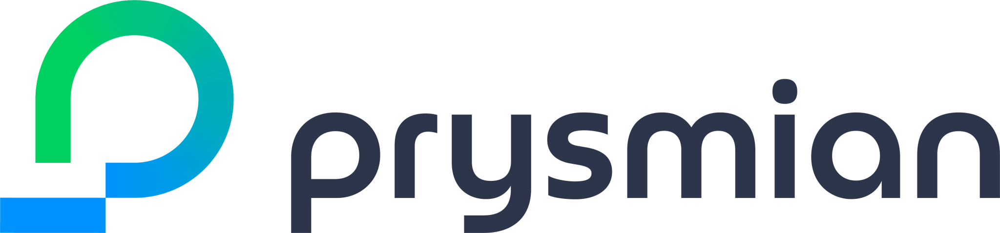

Ranglister Elnet & elektrisk udstyr Prysmian

Prysmian
Et blik på de samme fund, ikke en ny score. Sådan virker det
Kort fortalt
Prysmian får 94. Aktien er steget 50 % på et år og er dyr i forhold til både egen historik og konkurrenterne. Selskabet er i gang med et stort opkøb af Atkore, der for det meste finansieres med gæld, og datacentervæksten hviler på én stor kunde. Til gengæld er forventningerne hævet efter et rekordkvartal. Hold øje med, om det endnu ikke afsluttede opkøb forløber uden forsinkelser.
I 70+-zonen: en score over 70 med mere end 20% opside til analytikernes mediankursmål.
Største fradrag
- Multipler mod egen historik−5
- Pengestrøm−4
- Kundekoncentration / datacentre−4
Styrker
- Hævet guidance+3
- Ordrebog+2
- Prisstyrke+1
Sådan er scoren bygget op
Fra 100 til 97, trin for trin: point trækkes fra for forretningen, prisen og revnerne, lægges til for dokumenterede styrker, og så følger tre datajusteringer.
Hold musen over et trin eller vælg det for at se, hvad der drev det. Trin med fund åbner dem nedenfor.
Nøgletal
Pr. 20 nov. 2026. Analytikernes kursmål er ofte optimistiske; læs opsiden som et fingerpeg, ikke en prognose.
- Pris
- 100.50 EUR
- Analytikernes mediankursmål
- 158.00 EUR
- Opside til median
- +57.2%
- Analytikere
- 21
- Kursmålsinterval
- 95.00 – 186.00 EUR
- 52-ugers ændring
- +18%
- P/E (historisk)
- 24.9
- Forward P/E
- 16.4
- PEG
- 0.72
Fund
Hvert fradrag og hvert plus med sin kilde. Åbn et trin for at læse dem.
Forretning
Bliver virksomheden stærkere, ikke bare større? · 2 fund−4 af −30
- −1Vækstens kvalitetDen organiske vækst accelererede til 13,1 % i Q3 (9,2 % i 9M mod 7,2 % i H1) og er nu bred: Transmission +23,1 %, Industrial & Construction +14,2 %, Digital Solutions +17,3 % og Specialties tilbage på +5,3 % (dog −1,2 % i 9M). Men af omsætningsvæksten på 20,2 % i 9M kom 11,9 procentpoint fra metalpriser, og fra november lægges Atkores ca. 2,9 mia. USD i omsætning oveni, så meget af den synlige vækst er stadig købt eller sendt videre.
- −3KapitalallokeringAtkore blev overtaget 19/10-2026 for 3,8 mia. USD (ca. 3,3 mia. EUR, 9,8x EV/EBITDA 2025, 23 % præmie). Atkore tjente 386 mio. USD i justeret EBITDA på 2,85 mia. USD i omsætning (ca. 13,5 % margin, under Prysmians 16,8 % i Q3), og regnestykket på 7,1x kræver synergier på 150 mio. USD, hvoraf ca. 100 mio. er usikre kommercielle synergier.
Pris
Dagens multipler målt mod selskabets egen historik og konkurrenterne. · 3 fund−10 af −35
- −5Multipler mod egen historikKursen er faldet 14 % siden forrige analyse, og forward P/E er nu 17,5 mod 22,6 i september, midt i intervallet 14,8–20,7 fra 2021–25 (21,7 på 2026-konsensus). Men EV/EBITDA er 15,7 på rapporteret TTM-EBITDA, over toppen af 10,1–14,8 (ca. 11,7x pro forma på justeret 2026-guidance inkl. et helt år Atkore), og P/FCF er ca. 28 uden Molex-forudbetalingen mod 13,7–17,6.
- −3PeersNexans handles til forward P/E 14,7 og EV/EBITDA 8,4, NKT til EV/EBITDA 7,9; Prysmian koster 15,7x rapporteret EBITDA (ca. 11,7x pro forma justeret) – stadig en klar præmie, selv med højere margin.
- −2Absolut prisniveauIndtjeningsafkast 3,75 % TTM (4,6 % på 2026-konsensus) og udbytteafkast 0,8 %. Stockanalysis viser et FCF-afkast på 5,4 %, men uden Molex-forudbetalingen er det ca. 2,6 % TTM og ca. 3,8 % på FCF-guidance for 2026 mod 5,7–7,3 % i 2021–25.
Revner
Cash flow, kunder, gæld, insidere, guidance og det, der ligger bag hovedtallene. · 5 fund−15 af −35
- −3GældNettogælden faldt til 2,86 mia. EUR pr. 30/9 (fra 4,15 mia. i juni), men kun fordi emissionen på 847 mio. EUR og Molex-forudbetalingen lå i kassen før lukningen. Atkore blev 19/10 finansieret med 2,65 mia. EUR i nye lån: to brolån på 2,15 mia. med løbetid på 18 måneder og et terminslån på 500 mio., alle med variabel rente og uden rentesikring. Hybridobligationerne fra finansieringsplanen er endnu ikke udstedt, så brolånene skal refinansieres. Pro forma nettogæld er ca. 6,2 mia. EUR (ca. 2x justeret EBITDA inkl. Atkore før Q4-pengestrømmen), og Altman Z-score er 2,6.
- −4PengestrømSelskabets LTM-FCF steg til 1.434 mio. EUR (978 mio. i juni), men langfristede kundeforudbetalinger steg fra 9 til 591 mio. EUR (Molex-forudbetalingen på 550 mio., der skal betales tilbage i 2030–33). Renset er LTM-FCF ca. 850 mio. EUR, altså lavere end i juni og kun ca. 30 % af den justerede EBITDA. Lagrene er steget 697 mio. EUR på et år, og nettoinvesteringerne er 887 mio. mod 765 mio. FCF-guidance blev hævet til 1.750–1.850 mio. EUR, men indeholder forudbetalingen og to måneder Atkore.
- −4Kundekoncentration / datacentre10-årig aftale med Molex (Koch) til op til 5,5 mia. EUR og op til 1,1 mia. EUR om året i 2031 kræver investeringer på 1,25 mia. EUR frem til 2031; datacentre ventes at udgøre ca. 90 % af Digital Solutions i 2031. Én kunde og ét tema bærer en stor del af væksthistorien.
- −2MetalpriserMetalpriserne løftede omsætningen med 1.752 mio. EUR (+11,9 %) i 9M, og lagrene er steget 697 mio. EUR på et år. Power Grid tabte margin i Q3 (13,8 % mod 14,7 %), fordi prisstigninger først sendes videre med forsinkelse. Den nye langsigtede aftale med Aurubis om kobbertråd sikrer forsyningen, men ikke prisen.
- −2EksekveringEndnu flere store projekter på én gang: integrationen af Atkore (lukket 19/10) og Xtera (lukket 13/10), kapacitetsudbygningen for Molex, fordoblingen af fiberkapaciteten i USA (bl.a. 80 mio. USD i Lexington), udvidelsen af Encore Wire i Texas og et nyt kobbervalseværk. Det øger risikoen for forsinkelser og overskridelser.
Plus
Kun dokumenterede styrker. · 4 fund+7 af +15
- +3Hævet guidanceJusteret EBITDA-guidance for 2026 hævet igen til 3.075–3.125 mio. EUR (fra 2.800–2.900) efter et nyt rekordkvartal med 851 mio. EUR (+32 %) og 16,8 % margin. Atkore bidrager kun med ca. 55–65 mio. for to måneder, så ca. 190 mio. af løftet er organisk, og ledelsen venter at nå 2028-målene for EBITDA og FCF to år før tid.
- +2OrdrebogTransmission-ordrebogen er på ca. 16,3 mia. EUR pr. 30/9, plus ca. 2,15 mia. EUR i tildelte kontrakter, der endnu ikke er medregnet, og 240 mio. fra Xtera. Det svarer til godt fem års segmentomsætning, og segmentets EBITDA-margin steg til 20,0 % i Q3 (17,8 %).
- +1PrisstyrkeMarginerne steg kraftigt i Q3: Industrial & Construction 17,6 % (14,5 %) og Digital Solutions 25,0 % (19,6 %). Power Grid faldt dog til 13,8 % (14,7 %).
- +1OpkøbshistorikGeneral Cable, Encore Wire og Channell er integreret med stigende margin: driftsmarginen var 4,3 % i 2021, 7,8 % i 2025 og 9,5 % i Q3 2026, og den justerede EBITDA-margin ved standardmetalpriser var 15,5 % i 9M26 mod 14,1 %.
Forbehold
Det, scoren ikke fanger, eller hvor dataene er svage.
Også i Elnet & elektrisk udstyr
De højeste scorer i samme branche.